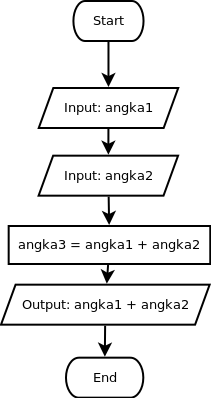

Pada materi-materi selanjutnya, kamu akan melihat banyak rancangan algoritma yang digambarkan dalam bentuk flowchart. Ada beberapa simbol yang umum dipakai dalam sebuah flowchart. Setiap flowchart selalu diawali dengan blok start dan diakhiri dengan blok end.
